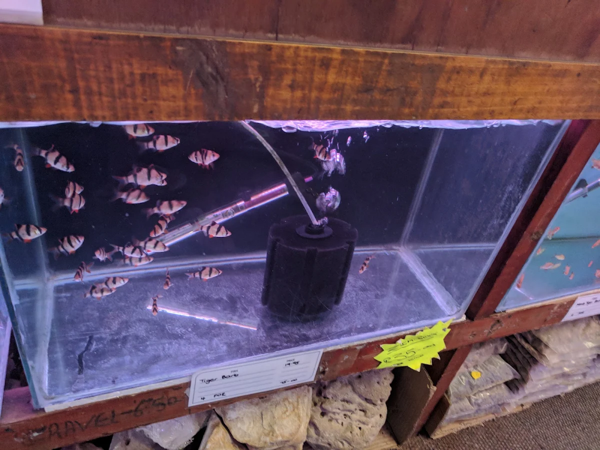
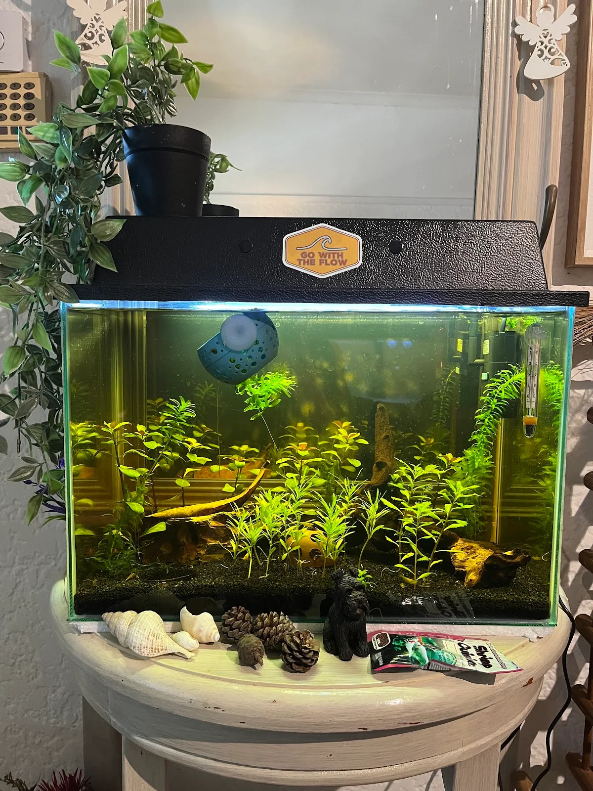
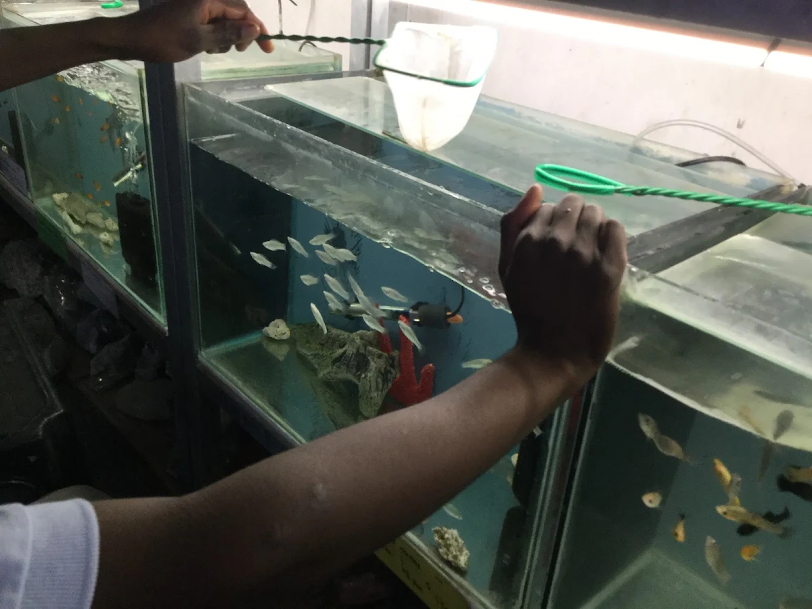

Your first tank, the easy way.
Everything we'd tell you across the counter, written down. Five steps, a shopping list, and the questions we're asked most.
Five steps, in order.
The order matters more than the brand of anything you buy. Get these right and the rest is easy.
-
1
Pick the tank. Bigger is easier.
Water chemistry moves slowly in a lot of water and quickly in a little. A 60 litre tank will happily forgive a missed water change, while a 20 litre one asks for a bit more attention. If you have your heart set on something small, a betta or a few shrimp will be very content in it. Find it a spot out of direct sun, on something sturdy: a litre of water weighs a kilogram.
-
2
Set it up and let it cycle.
Fish produce ammonia. Bacteria that live in your filter turn ammonia into nitrite, then into nitrate, which you remove with water changes. A new tank has none of those bacteria yet. Growing them takes three to six weeks without help, less with a bacteria starter from the shop. Run the filter, add a pinch of food or a dose of ammonia as fuel, and test the water. When ammonia and nitrite both read zero and nitrate is climbing, the tank is ready. It's the one part worth waiting for, and everything after it is easier.
-
3
Choose fish that get along.
Three questions for every fish: what temperature and water does it like, how big does it grow, and does it want company? Schooling fish are happiest in groups of six or more, where they colour up and swim out in the open. Add a few at a time, a week or two apart, so the filter can keep pace. This is the step to message us about. Send the tank size and your wish list, and we'll take it from there.
-
4
Feed a little, change some water, leave the filter alone.
Feed once or twice a day, only what disappears in a couple of minutes. A light hand with the food is the single easiest thing you can do for your water. Change 20 to 30 percent of it every week, using dechlorinated tap water at roughly the same temperature. Rinse filter sponges in a bucket of old tank water rather than under the tap, and do them one at a time, since that's where your bacteria live.
-
5
If something looks off, test first.
Cloudy white water in a new tank is a bacterial bloom, and it clears on its own. White spots on the fins and body are ich, which treats well when you catch it early. Fish hanging at the surface usually points to low oxygen or an ammonia reading, so test the water first. Then send us a photo and your numbers on WhatsApp. Between us we have seen most of it before.



The shopping list.
Everything a first tropical community tank needs. Bring this in, or send it to us and we'll put it together.
- Tank with a lid
- Filter rated above your tank's volume
- Heater, for tropical fish
- Thermometer
- Light, if you want plants
- Substrate: gravel, sand or a planted substrate
- Dechlorinator
- Bacteria starter
- Test kit for ammonia, nitrite, nitrate and pH
- Net, bucket and a gravel siphon
- Food to suit the fish you are getting
- Rock, wood or plants for cover, because shy fish colour up when they feel safe

Asked every day.
If yours isn't here, it's still a good question. Message us.
How long before I can add fish?
Three to six weeks for a tank to cycle without help, less with a bacteria starter. Test for ammonia and nitrite. When both read zero and nitrate is rising, add your first few fish, and only a few.
How many fish can I keep?
It depends on the fish more than the tank. A tank that comfortably holds a dozen small tetras is about right for a single goldfish. Send us your tank size and we'll give you a real number for the fish you have in mind.
Do I need a heater in Cape Town?
For tropical fish, yes. They want 24 to 26 degrees all year, and an indoor tank in a Cape Town winter drops well below that at night. Goldfish and other cold water fish don't need one.
Is Cape Town tap water safe?
Once it's dechlorinated, yes, for most community fish. Municipal water is treated with chlorine, so a capful of dechlorinator per bucket is all it takes. For fish with particular tastes, like discus or rift lake cichlids, have a word with us first and we'll talk it through.
Can I keep a goldfish in a bowl?
Goldfish need a bit more room than a bowl allows. They grow to hand size and produce a fair amount of waste, so a filtered tank of 60 litres or more suits them, and a little more again for two. Come and tell us about your space and we'll find something that works in it.
My water has gone cloudy. What's happening?
Probably nothing to worry about. Milky water in the first weeks is a bacterial bloom that clears on its own. Green water is algae, usually from too much light. Brown or yellow water is tannins from driftwood and is harmless. Persistent cloudiness in an older tank usually means overfeeding.
Can I bring a fish back if it isn't working out?
Talk to us. Every situation is different, and we'd far rather help you rehome a fish that has outgrown its tank or is unsettling its neighbours than see it unhappy. Message us with the details and we'll work something out.
Can you help me work out what's going on in my tank?
Gladly. Send a photo of the tank, a close-up if it's about one of the fish, and your test readings if you have them. The more detail, the better the answer.
More guides.
Cycling a new tank
What the nitrogen cycle is, how to run it without fish, and how to know when the tank is ready.
7 minute read
Water, testing and changes
The weekly routine, the tests that matter, target numbers, and what Cape Town tap water means for your tank.
8 minute read
Choosing fish that get along
How many, which ones, and who gets on with whom, with example communities for three tank sizes.
9 minute readSend us a photo of your setup.
Before you buy, after you set up, or any time you are curious about something. A photo and a sentence is all we need.
